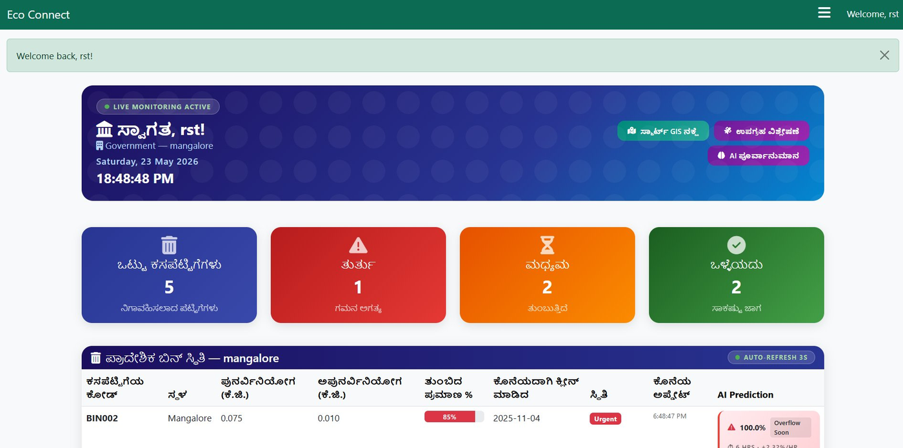
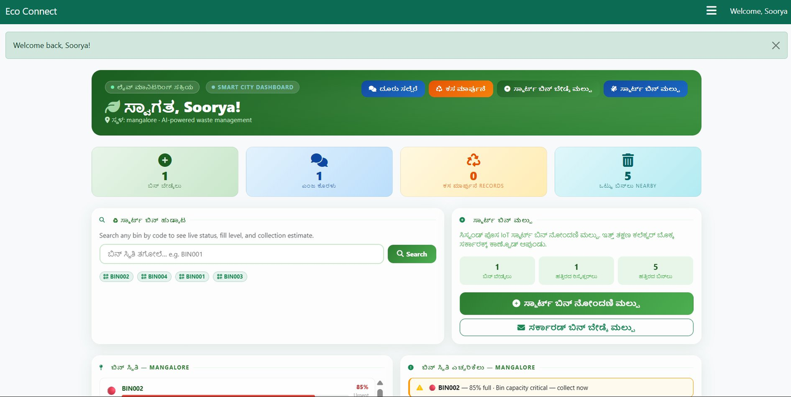

Three Languages, One Platform
EcoConnect-X supports multilingual dashboards for better accessibility across local communities in coastal Karnataka.
English Interface
The default platform language. All dashboards — citizen, collector, recycler, and government — are available in English with clear labels, status indicators, and action buttons.
- Citizen dashboard with bin lookup and complaint forms
- Collector task management and map view
- Recycler marketplace and transaction history
- Government regional analytics and bin management

ಕನ್ನಡ ಬೆಂಬಲ — Kannada Support
The entire platform interface switches to Kannada — Karnataka's official language. Dashboard labels, bin status, complaint categories, and navigation all render in Kannada script, making the system genuinely usable for Kannada-speaking citizens and government users.
- Dashboard headers and labels in Kannada
- Bin status alerts — "ತುರ್ತು", "ಮಧ್ಯಮ", "ಒಳ್ಳೆಯದು"
- Regional bin status table in local script
- Action buttons and navigation fully translated

ತುಳು ಬೆಂಬಲ — Tulu Support
Tulu is the primary spoken language of the Mangalore–Udupi coastal belt. EcoConnect-X renders the full dashboard in Tulu script, ensuring community-level accessibility for citizens and local government officials who prefer Tulu.
- Complete Tulu script across all UI sections
- Bin status, complaint forms, and marketplace in Tulu
- Field-usable for Tulu-speaking collectors
- Regional government monitoring in local language
